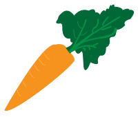
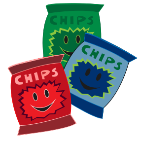

Tema 2
Tema 3
Tema 4
Tema 5
Tema 6
Tema 2
Tema 3
Tema 4
Tema 5
Tema 6
Tema 4
Grundlæggende animation

I dette tema er jeg blevet introduceret til javascript, som gør at jeg nu kan inddrage flere elementer der er interaktive og sammen med animationer i css kan jeg lave et mere dynamisk site.
Opgaven i dette tema bestod af at lave et spil. Her stod jeg selv for at lave et tema for mit spil.
Vi startede med at skitsere de forskellige elementer der skulle indgår i spillet. Efter at have tegnet skitserne, lærte vi at bruge de basale redskaber i Adobe Illustrator til at udvikle vores svg filer.
startside af spillet

Vi fik en række spil med forskellige stile, som vi skulle vælge i mellem. Jeg valgte at tage stilen fra et spil der hedder Toca Doctor, som kendetegnes ved at elementer kunne ligne det var blevet klippet ud med en saks og der indgår noget tekstur på især baggrunden.
Toca Doctor har få farver, hvor jeg så har valgt at bruge alle de primære farver, da det giver et mere retro look og det var det udtryk jeg gerne ville give.

spillet og sitet
Aktivitetsdiagram
Til at lave et overblik og få en større forståelse for spillets interaktive flow, lavede jeg aktivitetsdiagram og et state machine diagram.
Udover spillet skulle jeg lave et simpelt site der introducerede spillet både stilmæssigt, men også brød spillet op i elementer, så det var muligt at få et overblik over opbygningen af spillet.
Video af sitet
Video af spillet